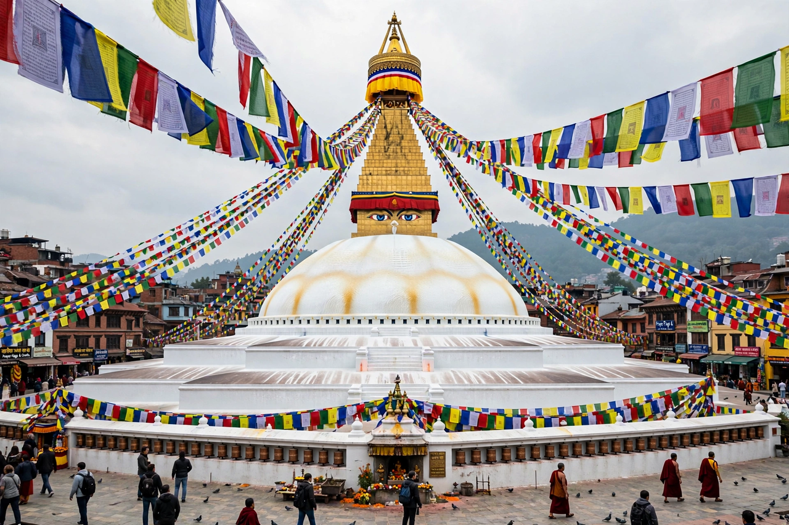

Stupa
From Wikipedia, the free encyclopedia

A stupa (Sanskrit: 'heap') is a mound-like or hemispherical structure containing relics, used by Buddhists as a place of meditation and circumambulation. Originating as pre-Buddhist burial mounds, stupas became Buddhism's earliest architecture after the Buddha's relics were divided among eight stupas; the emperor Ashoka is said to have built 84,000 across his empire. Forms evolved regionally — the Indian anda dome on a stepped base, Tibetan chörten, Burmese pagodas, East Asian pagodas derived from the stupa fused with the Chinese watchtower.
Symbolism and form
The stupa embodies the Buddha, the dharma and the cosmos: a square base (earth), dome (water/dome of heaven), the triple umbrella (chattra) of the harmika, and spire rings. Devotees circumambulate clockwise (pradakshina), as at Sanchi (the Great Stupa, core Ashokan, enlarged in stone c. 1st century BC, its gateways carved with Jataka tales), Borobudur (a mandala-stupa mountain) and Boudhanath.
Spread
With Buddhism the stupa travelled the Silk Road and sea routes, becoming the dagoba of Sri Lanka, the chedi of Thailand, the suburgan of Mongolia and the models for Japan's five-ring gorintō. Relic stupas still anchor pilgrimage — the Temple of the Tooth's reliquary culture in Kandy, Shwedagon's hilltop in Yangon — while contemporary architects (and peace pagodas worldwide) revive the form.